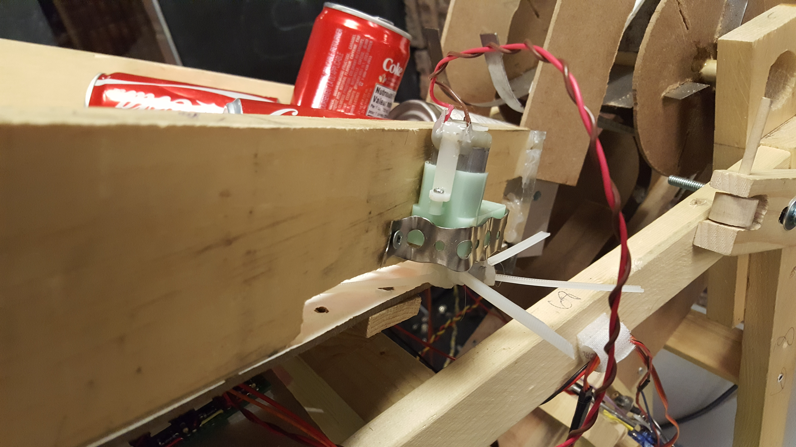
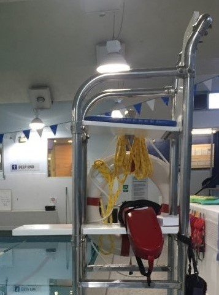
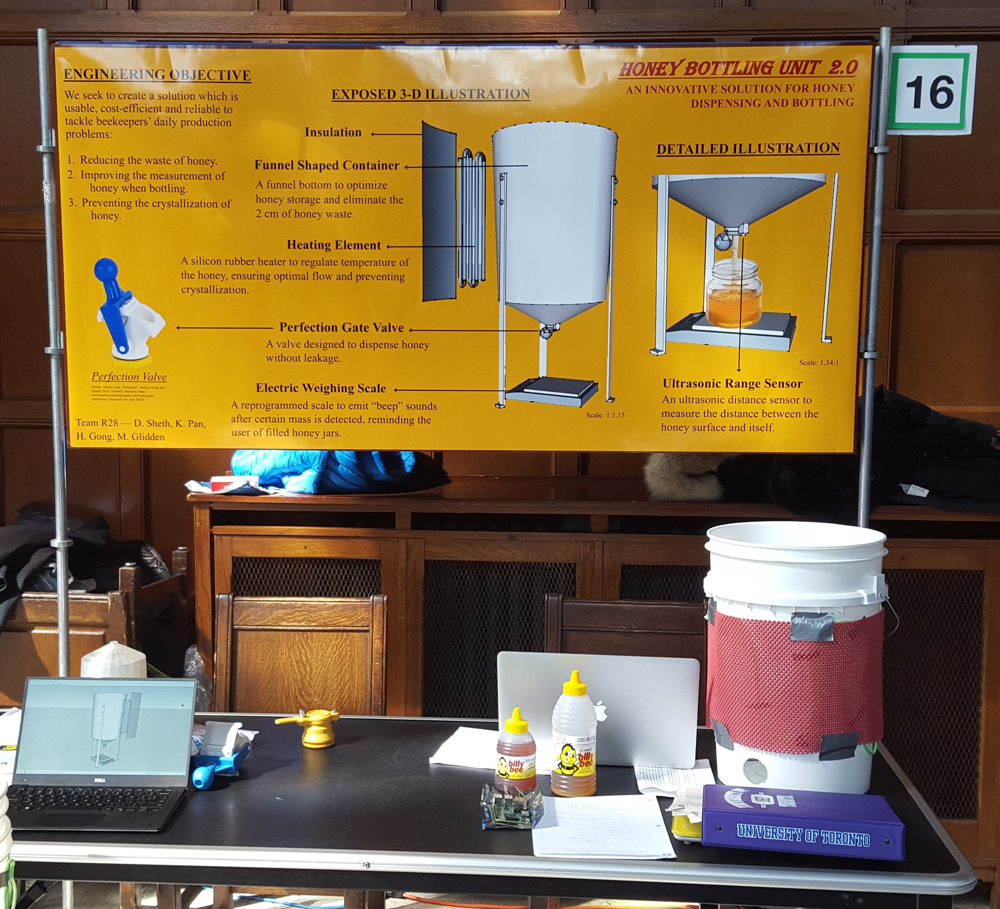

Welcome
Hello, my name is Dhun Sheth and I welcome you to my website. Directly below you will find a lot about me, such as my past education, interests and ambitions. Further down, you will see my resume and previous projects which I have worked on.
BASc in Engineering Science Candidate
Major of Mathematics, Statistics and Finance
Hello, my name is Dhun Sheth and I welcome you to my website. Directly below you will find a lot about me, such as my past education, interests and ambitions. Further down, you will see my resume and previous projects which I have worked on.
I attended J. Clarke Richardson Collegiate, located in Ajax, ON. In high school majority of my courses were centered around S.T.E.M areas as well as a few in accounting and finance. Along with these courses I was also part of several extra-curricular teams and activities, including Student Council, Volleyball and Badminton.
After high school, I decided to attend the University of Toronto, St. George campus, for Engineering Science. I chose UofT over other universities because I loved the downtown atmosphere and campus. Also, I felt that the Engineering Science program was a very good fit for me, as it would allow me to pursue a very wide range of opportunities and interests. After my second year, I decided to major in Mathematics, Statistics and Finance because it combined my passion for mathematics and my interest in business/finance from high school. I am currently in the middle of completing my third year in Engineering Science and am enjoying every second.
A very big non-educational/work related interest of mine is snowboarding. I've been going since I was in grade 6 and look forward to going every winter. Besides snowboarding, I also like to work out frequently, be it through sports, swimming or the gym.
I am very interested in finance, data analytics, quantitative trading and consulting. When I think about where I want to be in 10 years, each of these areas is equally appealing and possible. I have had an interest in finance since high school. What attracts me to data analytics is the information which can be extracted from various data sets and how it can be used to further specific business activities. I got into quantitative trading during my third year when I took a course on portfolio management and options. I started to notice the immense scope of profit from calculated and correct decisions. This, with the growth of quantitative trading which is very analytic and methodical, got me really excited for a potential future in quantitative trading. Finally, I have always entertained the possibility of consulting because I always found it refreshing to encounter and work on various different problems. This, combined with my knack for communicating with people make it a very real possibility for me to have a career in consulting
| Experience | Description | Term |
|---|---|---|
| Canada Revenue Agency Student Intern |
|
May 2017 - Sept 2017 Toronto, ON |
| University of Toronto Blue Sky Solar Racing Financial Officer |
|
Sept 2016 - Jan 2017 Toronto, ON |
| Ontario Power Generation Student Volunteer |
|
Jul - Aug, 2012 - 2014 Pickering, ON |
| Ajax Community Center Assistant Water Safety Instructor |
|
Jul 2014 - Aug 2014 Ajax, ON |
| Education | Description | Graduation |
|---|---|---|
| University of Toronto |
BASc in Engineering Science |
Major in Mathematics, Statistics and Finance I'm currently in my third year of engineering science. During my first two years in engineering science, my courses were spread over usual engineering courses as well as the maths and sciences. Now in my third year, my courses are more focused mathematics, statistics and finance. |
Expected Grad. April 2020 |
| J. Clarke Richardson Collegiate | Graduated high school with honor roll. Courses were spread over S.T.E.M and business courses. I was also part of various extra-curricular activities and teams including Student Council, Volleyball and Badminton. | Grad. 2015 |
 This was a fully autonomous can sorting machine which my two teammates and I had built for a design course, AER201, in our 2nd year. The goal of the project was to sort four types of cans; aluminum pop can with tab, aluminum pop can without tab, tin soup can with label and tin soup can without label. Twelve assorted cans had to be sorted within three minutes. The first step in the cycle was for the "claw" to pick up a single can from the hopper and drop it into our "sensing channel". Here, we used a magnetic switch to determine if the can in the channel was a tin or aluminum can. If it was determined to be an aluminum can, we then used a carefully calibrated laser sensor to check if there was a tab on the aluminum can or not. It did not matter if the can was inverted or not because even if it was, the can stood a little taller because of the tab, which was then picked up by the laser sensor. If the can was determined to be a tin can, then we used a colour sensor to check if the can had a label or not. Once the type of can was determined, we used a ramp on a servo to guide the can into the correct bin. This cycle was repeated until all the cans were sorted.
This project was done in my first year for a design course called Praxis II. The project for this course was broken up into two parts. This first part, my team and I had to go into the downtown community, approach local establishments and try to identify a problem they may be encountering. We then had to take our findings and write a request for proposal (RFP) which outlined the objectives, stakeholders and requirements. The second part, we were given a problem and we had make a solution and present it during a showcase.
 For the first part of the design course, we decided to work with University Settlement, a community-based social service center in Downtown Toronto. After talking with the recreation supervisor and looking at the facility, we learned that the lifeguard chairs there were amongst the most outdated of equipment. The chairs had protruding bolts and made it difficult for the lifeguards to move and react to situations. As a result, we decided on the opportunity for redesigning the lifeguard chair. We outlined potential stakeholders and requirements, as well as metrics to measure and compare potential proposals.
 During the second part of the course, we were given a problem associated with bottling honey. At the time of the project, majority of honey was bottled using a regular bucket with a closing valve outfitted at the bottom of the bucket. The first issue we noticed was that the honey below the valve would not come out and so it would need to be manually removed which wasted time and created a mess. The second issue was found when some testing was done with the closing valve. After a jar of honey was filled and the valve was closed, honey would continue to drip, which wasted honey and also created a mess. To resolve these issues, we proposed a funnel like shape with the valve at the bottom, which allowed all the honey to be packaged the same way. Also, we found a lesser known valve called a "perfection valve", and after some testing, concluded it was better than the closing valve because honey did not drip after it was closed.